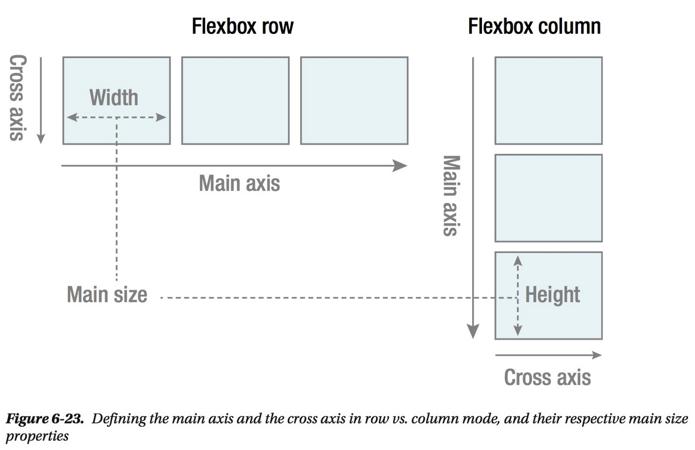

Responsive Web design is the approach that suggests that design and development should respond to the user’s behavior and environment based on screen size, platform, and orientation.
Responsive web design (RWD) is a modern web design approach that creates dynamic changes to the appearance of a website and adjusts the content websites and webpages to automatically render (or display) on all devices or screen sizes, whether it’s a desktop, laptop, tablet, or smartphone and provides an optimal viewing experience.
Responsive design is a term coined by Ethan Marcotte to describe the behavior of content adapting to the resolution of the rendering device.
